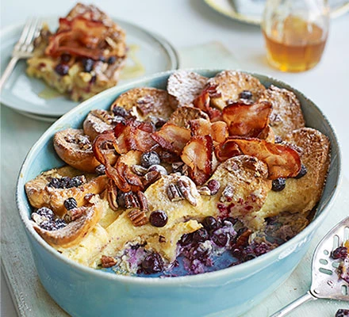

<!DOCTYPE html>
<html lang="en>
<head>
<title>Brioche Breakfast Bake with Crispy Bacon</title>
<meta charset="UTF-8" />
<meta name="viewport" content="width=device-width, initial-scale=1.0" />
</head>
<body>
    <h1>Brioche Breakfast Bake with Crispy Bacon</h1>
    
    <p>Indulge at brunch with this make-ahead breakfast dish, inspired by the classic combination of French toast, maple syrup and bacon</p>
    <h2>Ingredients</h2>
    <ul>
        <li>3 large eggs</li>
        <li>150ml double cream</li>
        <li>200ml milk</li>
        <li>2 tbsp maple syrup</li>
        <li>2 tsp vanilla extract</li>
        <li>200g blueberries</li>
        <li>8 brioche rolls, each one split in half (if your dish is shallow, cut in half again the other way to make shorter pieces)</li>
        <li>50g pecan halves</li>
        <li>6-8 bacon rashers</li>
        <li>icing sugar, for dusting</li>
    </ul>
    <h2>Method</h2>
    <dl>
        <dt>Step 1</dt>
        <dd>In a large bowl, whisk together the eggs, cream, milk, maple syrup, vanilla and a pinch of salt. Tip about two-thirds of the blueberries into a baking dish (about 20cm x 30cm) that is quite deep. Dip each brioche piece into the egg mixture until well soaked, then arrange on top on the blueberries and pour any remaining egg mixture over the top. Scatter over the remaining blueberries. Cover with cling film and chill for 1 hr, or overnight if serving it for breakfast.</dd>
        <dt>Step 2</dt>
        <dd>Heat oven to 180C/160C fan/gas 4. Uncover the dish and scatter over the pecans. Bake for 25 mins until the egg mixture is set and the blueberries are starting to burst. Meanwhile, line a baking tray with foil and arrange the bacon on top. When the brioche bake is ready, remove from the oven and cover loosely with foil to keep warm. Heat the grill to high and cook the bacon for about 5 mins each side until crispy.</dd>
        <dt>Step 3</dt>
        <dd>Dust the brioche bake with icing sugar and top with the crispy bacon. Serve with extra maple syrup for drizzling.</dd>
    </dl>
</body>
</html>